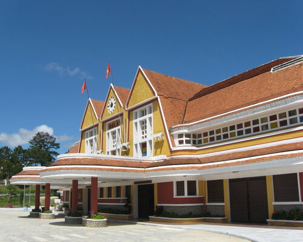

Ga Đà Lạt - Di tích lịch sử và điểm đến du lịch nổi tiếng
Chào mừng bạn đến với Ga Đà Lạt - điểm đến tuyệt vời của miền Trung Việt Nam! Đà Lạt, thành phố ngàn hoa nằm ẩn mình giữa dãy núi cao nguyên Lâm Viên, không chỉ nổi tiếng với khí hậu mát mẻ quanh năm mà còn là địa điểm du lịch lý tưởng cho những ai muốn trải nghiệm sự hòa mình vào thiên nhiên tươi mới. Ga Đà Lạt chính là cổng vào thiên đàng của thành phố này, nơi du khách bắt đầu hành trình khám phá những địa điểm độc đáo và trải nghiệm văn hóa độc đáo. Đến với ga, bạn sẽ bị cuốn hút ngay từ ánh đèn vàng ấm áp phát ra từ kiến trúc cổ điển, tạo nên không khí ấm cúng và thoải mái.
Không chỉ là điểm trung chuyển quan trọng, Ga Đà Lạt còn là nơi đặc biệt khiến du khách thích thú bởi vẻ đẹp của các bức tranh nghệ thuật trên tường, nơi ghi lại những hình ảnh lãng mạn và lịch sử của thành phố. Mỗi chi tiết tại ga đều tạo nên một không gian độc đáo, đặc sắc, mang đến trải nghiệm mới mẻ và thú vị. Những chuyến tàu từ nhiều địa phương khác nhau đều hướng về Ga Đà Lạt, tạo nên một sự đa dạng về văn hóa và ngôn ngữ. Bạn có thể gặp gỡ và trò chuyện với những người đến từ khắp nơi, chia sẻ những câu chuyện thú vị và tìm hiểu thêm về văn hóa độc đáo của Đà Lạt. Từ Ga Đà Lạt, bạn dễ dàng tiếp cận với các điểm du lịch nổi tiếng như Hồ Xuân Hương, Thác Prenn, hay Khu du lịch sinh thái Tà Nung. Bạn cũng có thể thưởng thức những loại hoa độc đáo tại các vườn hoa nổi tiếng, tận hưởng không gian yên bình và tươi mới. Hãy để Ga Đà Lạt là điểm bắt đầu cho hành trình của bạn, nơi bạn không chỉ cảm nhận được hương vị của miền núi rừng xanh ngắt mà còn lạc quan trước vẻ đẹp tinh khôi và quyến rũ của thành phố ngàn hoa. Khám phá và trải nghiệm Đà Lạt qua cánh cửa mở của Ga Đà Lạt, nơi hành trình của bạn bắt đầu!